Pulsenics Website
I took over pulsenics.com and have reshaped much of it since: a redesigned homepage and product pages, and a new Knowledge Centre and News section, where I host and embed the team's interactive EIS modules.
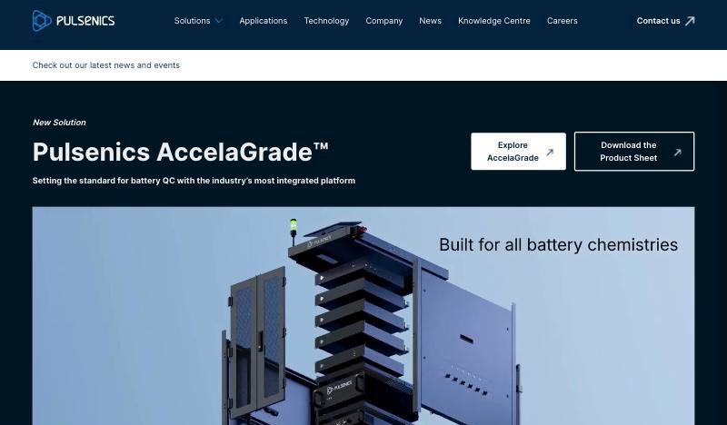
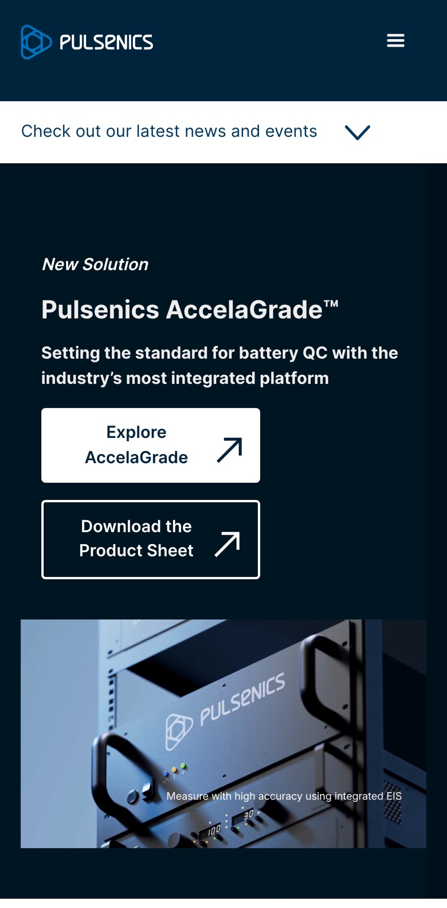
- ClientPulsenics, Toronto
- My roleTook over the site; design, build and maintenance
- PlatformWebflow CMS, with interactive modules hosted on Netlify
- ScopeHomepage and product redesign (with the team), Knowledge Centre, News, hosting and embedding the interactive modules
- StatusLive, and I still maintain it
Explain a deeply technical product to engineers who will check every claim.
Pulsenics sells electrochemical impedance spectroscopy (EIS) hardware to battery, hydrogen and fuel-cell teams. Its buyers are scientists and engineers. The site has to show the products, prove the science and keep up with a steady flow of partnerships and studies.
I inherited the site from its original designer and kept its established look, then grew and reworked it screen by screen as the company launched new products and needed new ways to teach its technology.
Lead with the newest product
The homepage opens on AccelaGrade, the company's new battery grading system, with two clear actions: explore the product or download the spec sheet. Visitors arriving from a launch announcement land on exactly what they came for.
Two product lines, compared at a glance
AccelaGrade and the Pulse Series sit side by side in matching cards: a one-line purpose, four capabilities each, and a single Learn More link. Someone deciding between grading and diagnostics can tell the difference in seconds.
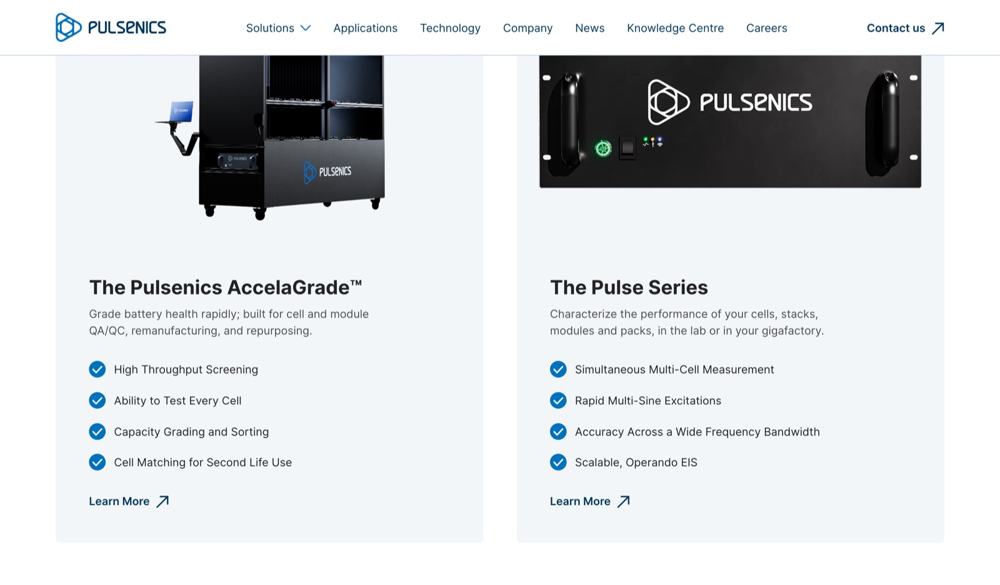
Product pages organised around real applications
The Pulse Series page explains the product through the problems it solves: degradation benchmarking, post-field failure analysis, catching stack defects before they ship. Each one links to an in-depth Knowledge Centre article, so product marketing and education feed each other.
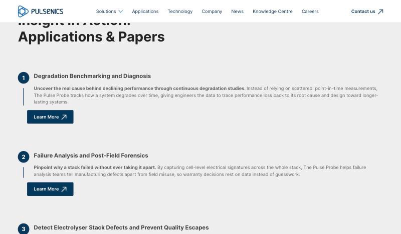
Show the software, not just the hardware
Every Pulse Series system ships with the Pulse Hub software, so the product page gives it a section of its own, shown on a monitor the way a lab would use it. The interface on that screen is the System Software I designed with Marc Varone.
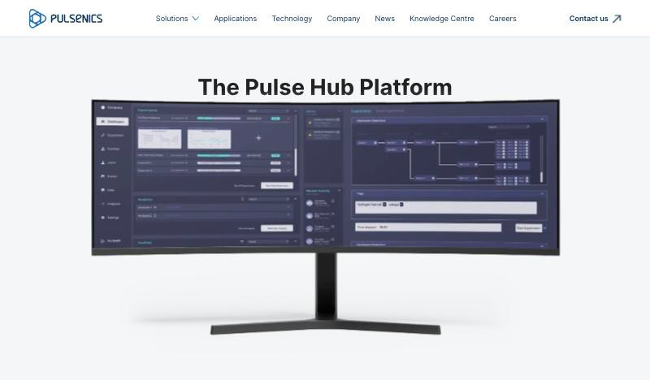
A documentation-style home for everything Pulsenics knows about EIS, from first principles to field applications. It's built as a Webflow CMS collection, so the team can add articles without touching the layout.
Navigate by topic
Technology basics in order, then applications grouped by industry: battery and hydrogen.
Read in depth
Long-form articles with equations, figures and interactive modules inline.
Jump within a page
An automatic table of contents for each article, plus a link to talk to Pulsenics.
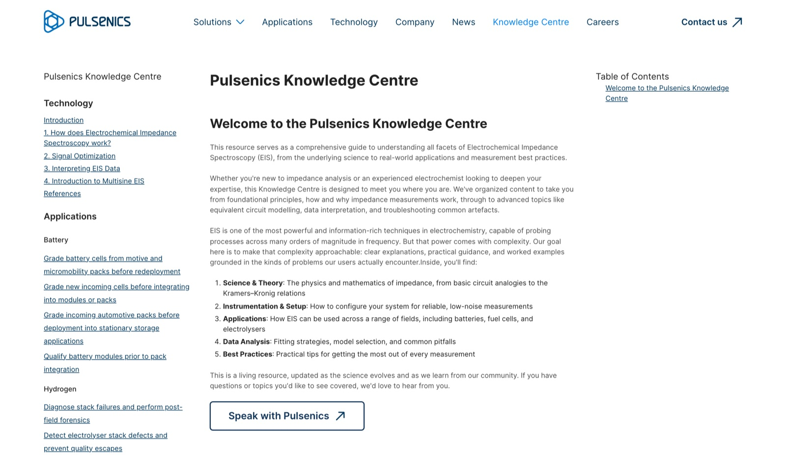
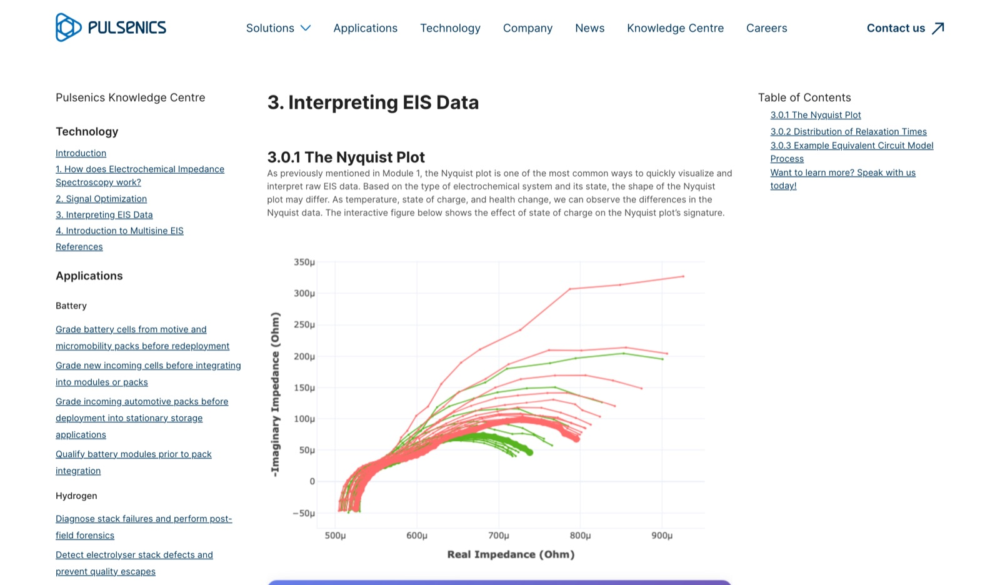
EIS is hard to learn from static charts, so the Pulsenics team built interactive Plotly modules that let readers change the inputs and watch the data respond. My part was getting them onto the site: I host them on Netlify and embed each one in its Knowledge Centre article, so they sit right inside the reading flow.
Equivalent circuit model
Six sliders (solution resistance, two charge-transfer resistances, two double-layer capacitances and a Warburg term) redraw the Nyquist plot as you move them.
State of charge
Switch between charging and discharging and scrub through state of charge to see how a battery's impedance signature shifts.
Distribution of relaxation times
Tune the model and watch the DRT peak move between mass transport, charge transfer and ionic transport regions.
Multisine signal builder
Set the number of frequencies, range, amplitude and phase, then let the module find the phase that minimises peak amplitude.
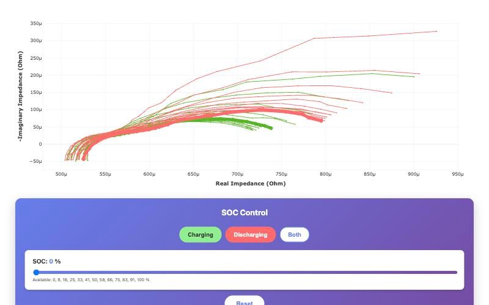
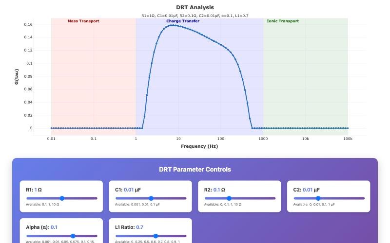
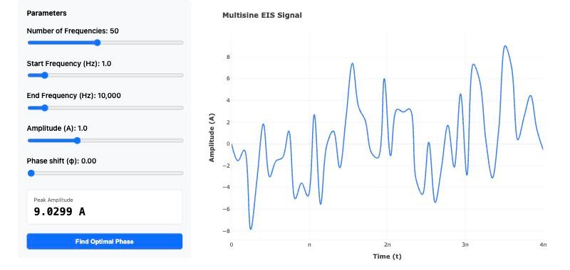
Pulsenics publishes partnerships, conference talks, product launches and studies almost every month. The News page is a CMS collection with a featured story on top and a filterable grid underneath: Announcement, Conference, Technology, Company, Collaboration, and Studies & Papers.
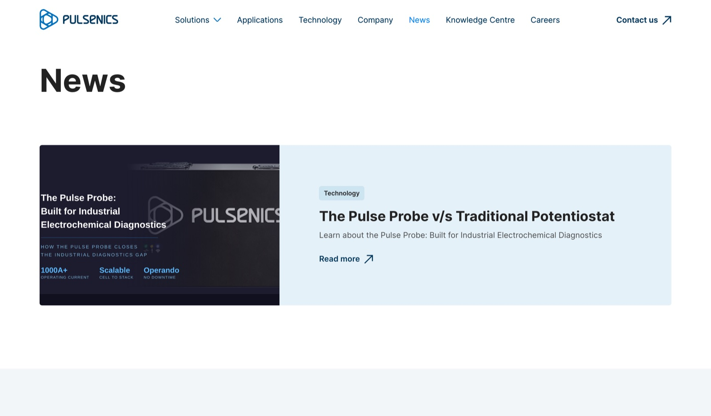
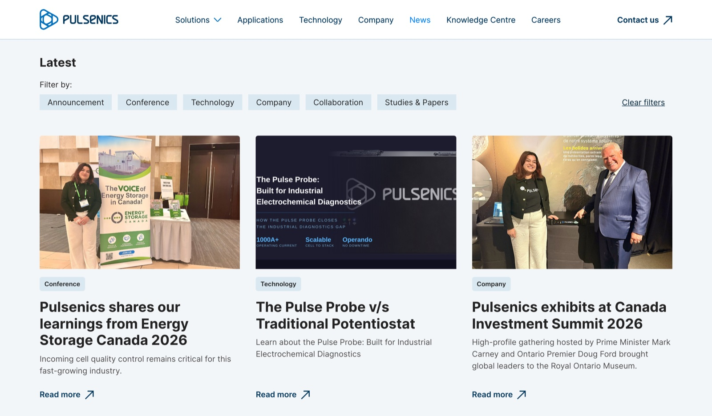
Every page is responsive, and the embedded modules stay usable on small screens.
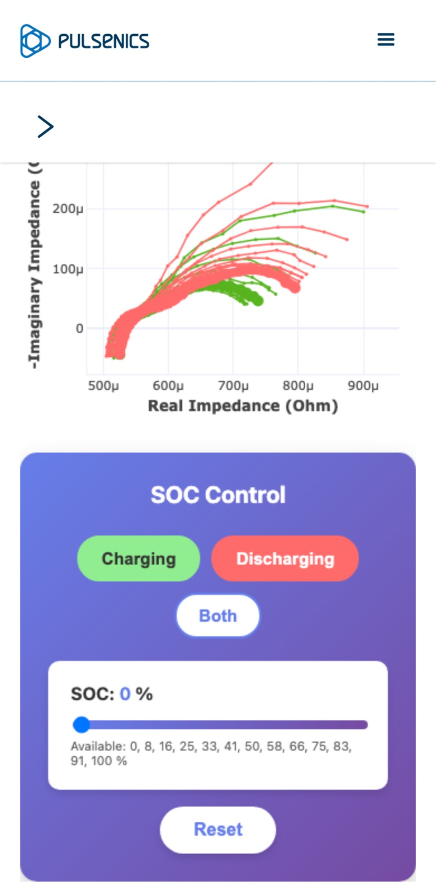
The site is live, and still growing
I keep building on it as Pulsenics launches products and publishes research.